Measure the Pixels
Building an AI Astrophotographer
NOVA is an autonomous processing engine: it stacks, processes, and grades deep-sky images from a SeeStar S50 on its own — every decision measured from pixel statistics, every run versioned like the software it is.
Measure the pixels. Make the call.
Latest from the engine
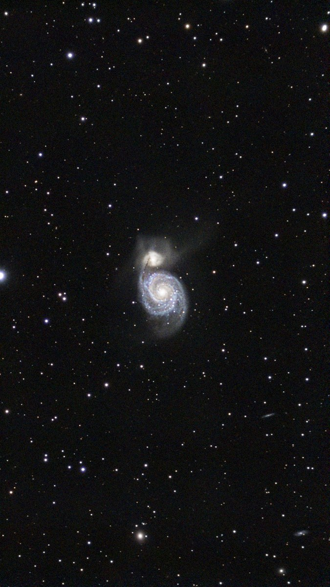
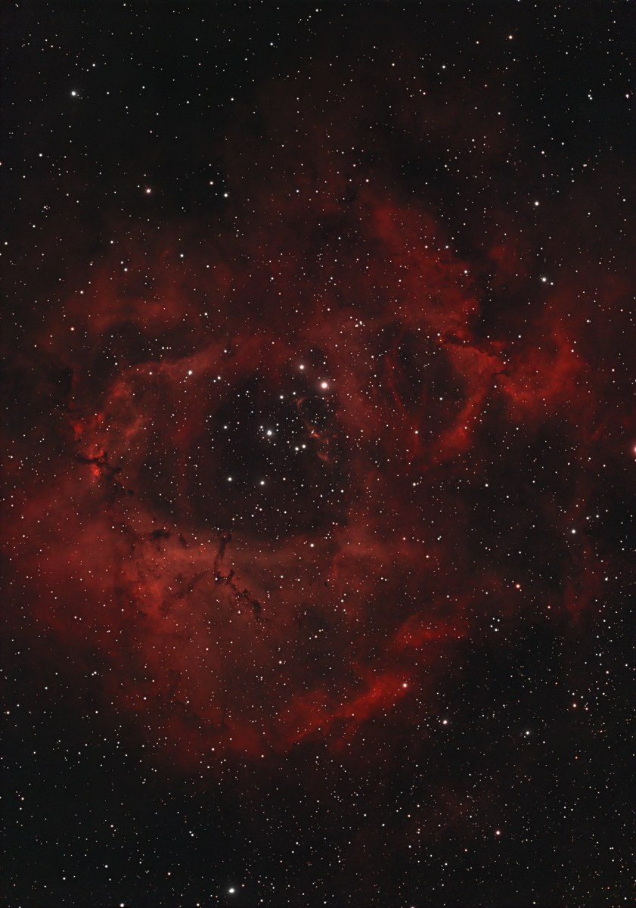
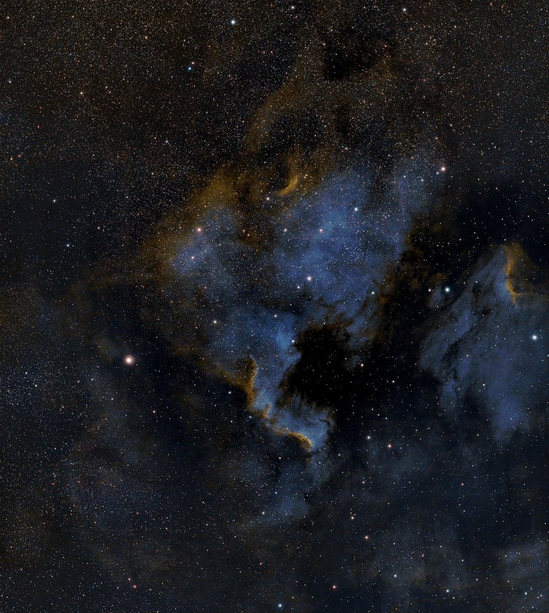
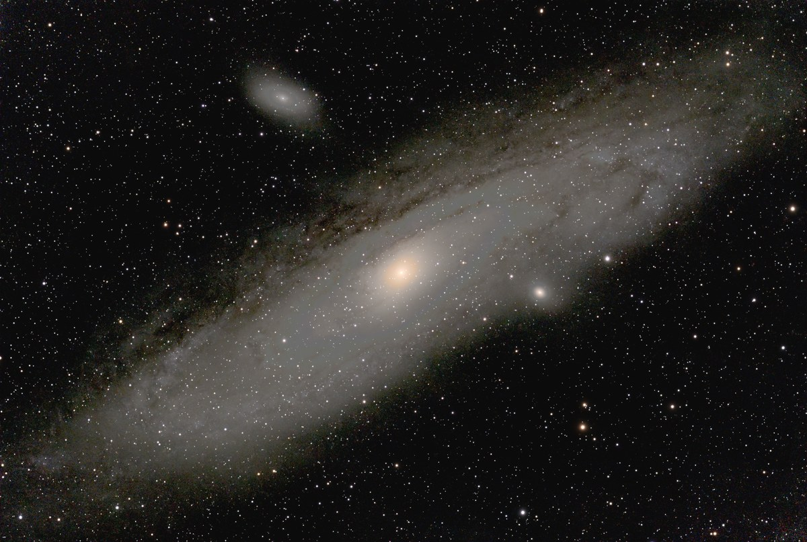
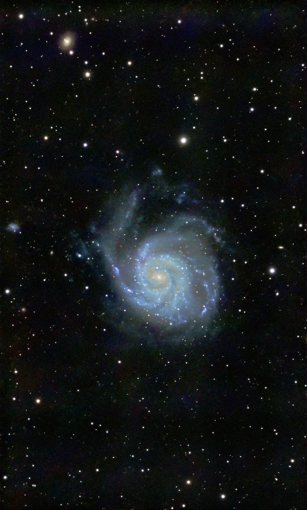
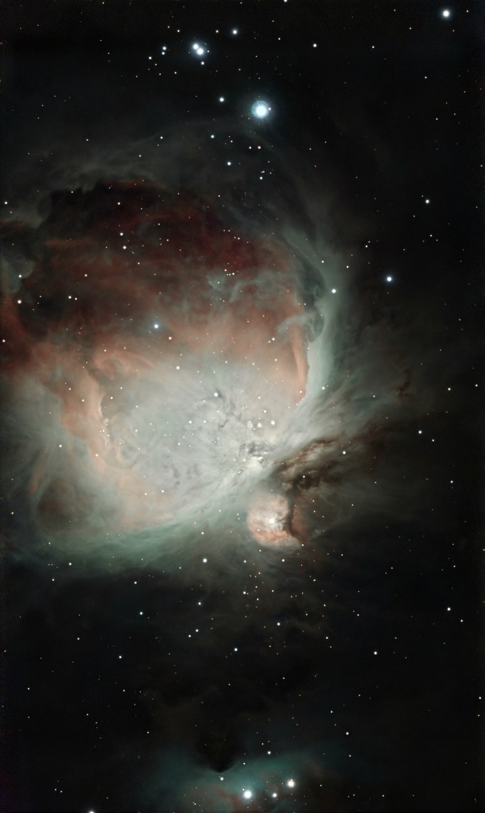
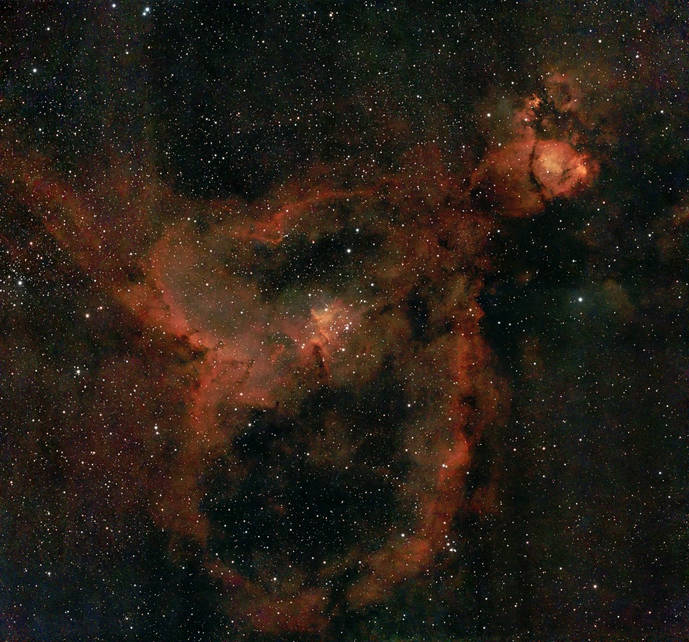
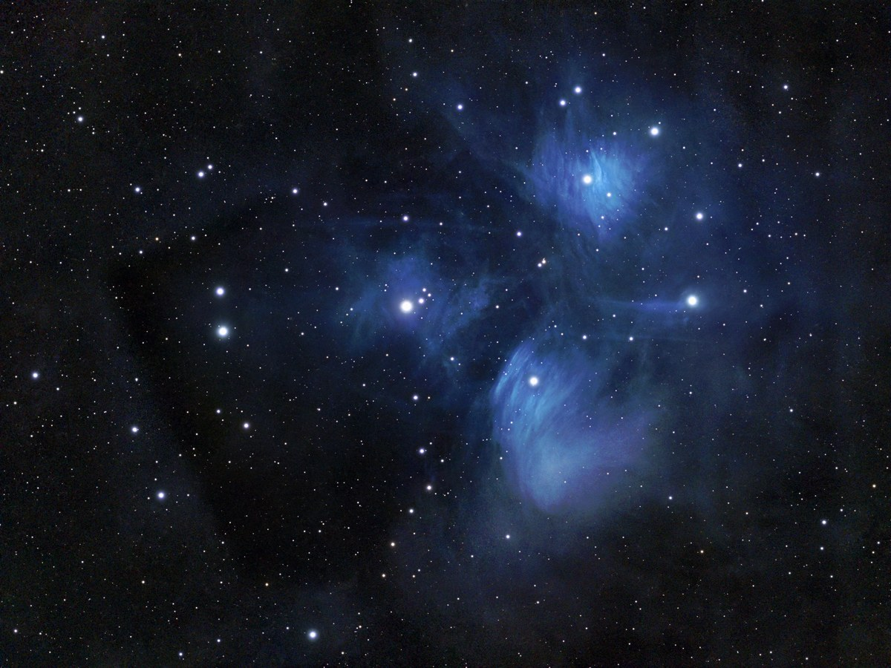
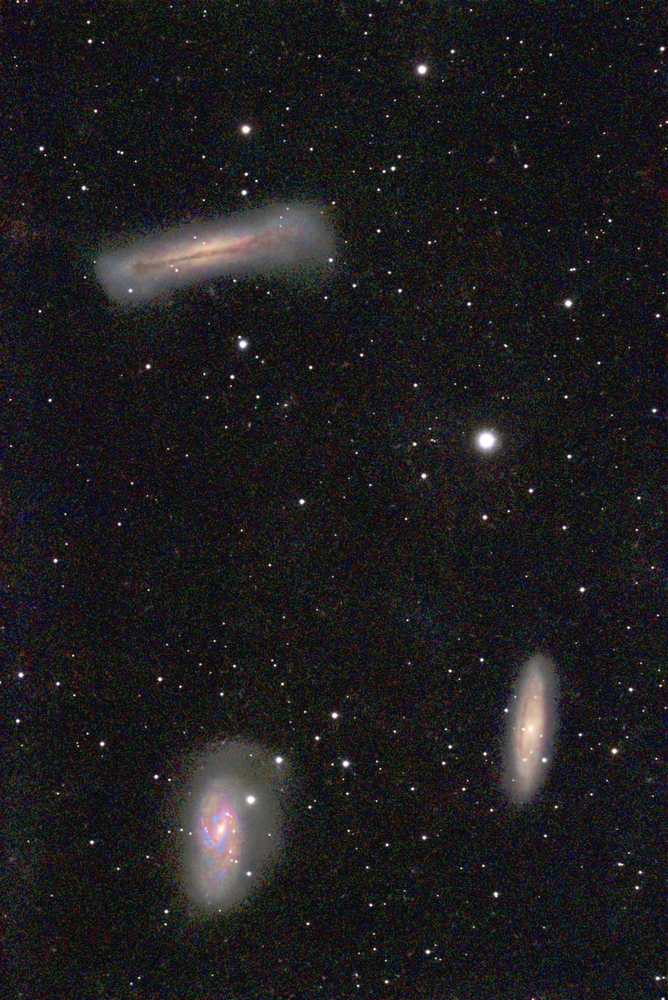
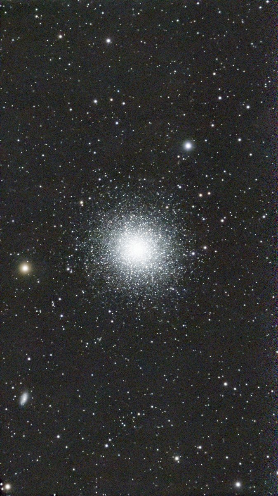
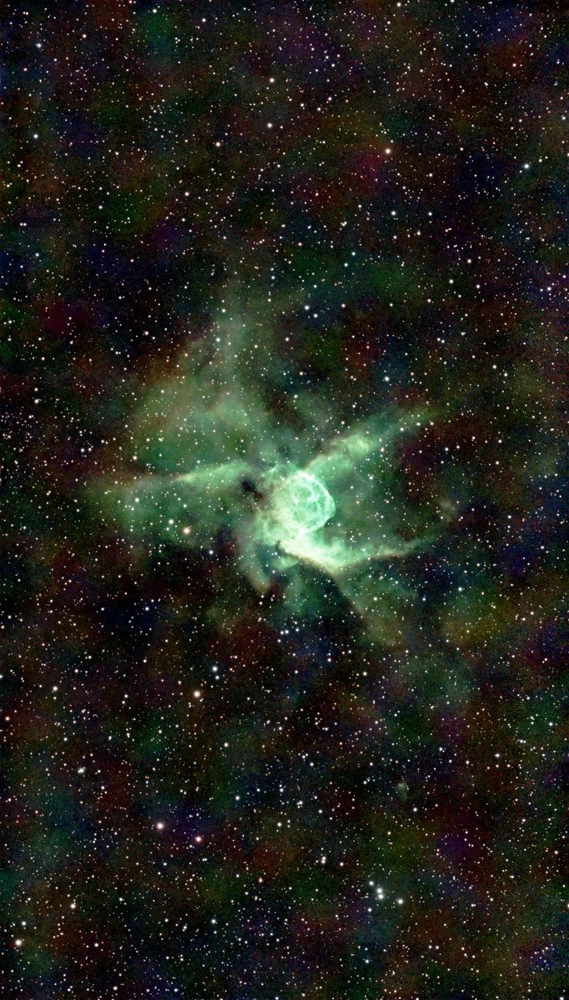
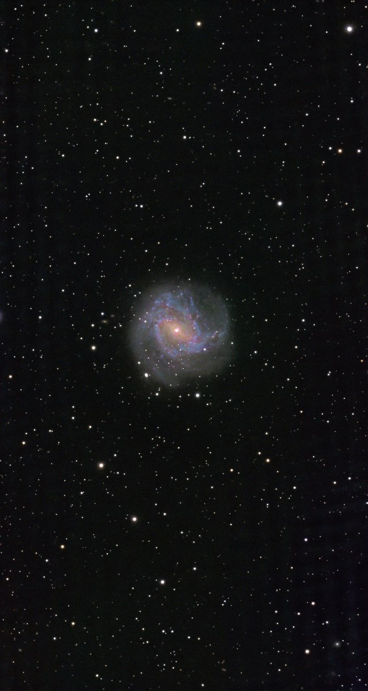